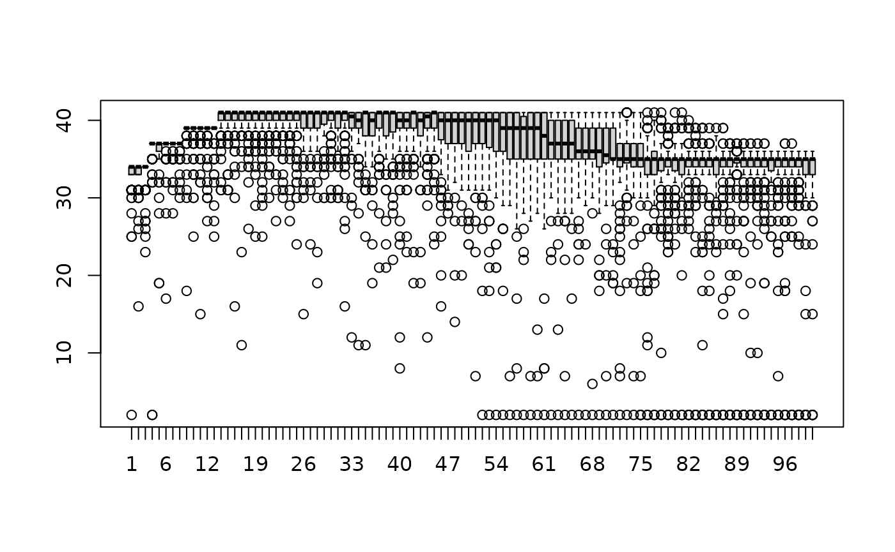

vignettes/07-rnaseq-day2.Rmd
07-rnaseq-day2.RmdMapping reads to the genome is a very important task, and many different aligners are available, such as bowtie (Langmead and Salzberg 2012), topHat (Trapnell, Pachter, and Salzberg 2009), STAR (Dobin et al. 2013) and Rsubread (Liao, Smyth, and Shi 2013). Rsubread is the only aligner that can run in R. Most mapping tasks require larger computers than an average laptop, so usually read mapping is done on a server in a Linux-like environment. However, for the purpose of this workshop, we will demonstrate how read alignment and counting can be performed using R. We will map a small subset of reads (1000) from each sample from our mouse lactation dataset (Fu et al. 2015), and we will only be mapping to chromosome 1. This is so that everyone can have a go at alignment and counting on their laptops using RStudio.
This material was inspired by this edgeR case study by (Lun, Chen, and Smyth 2016) and this Rsubread case study.
Packages used:
To install the package you can:
if (!requireNamespace("BiocManager"))
install.packages("BiocManager")
BiocManager::install("Rsubread")Mouse mammary data (fastq files): https://figshare.com/s/f5d63d8c265a05618137 You should download these files and place them in your /data directory. See below for how you can import from the links using R.
The raw reads were downloaded from SRA from the link given in GEO for the dataset - ftp://ftp-trace.ncbi.nlm.nih.gov/sra/sra-instant/reads/ByStudy/sra/SRP%2FSRP045%2FSRP045534. These files are in .sra format. The sra toolkit from NCBI was used to convert the .sra files to .fastq files using the fastq-dump command and the first 1000 reads in each file was extracted.
We have provided the index files for chromosome 1 for the mouse genome build mm10 for this workshop in order to save time on building the index. However, full genome fasta files for a number of different genomes are available to download from the UCSC genome browser, see http://hgdownload.soe.ucsc.edu/downloads.html; from NCBI: http://www.ncbi.nlm.nih.gov/genome; or from ENSEMBL: http://asia.ensembl.org/info/data/ftp/index.html.
First, let’s load the Rsubread package into R.
# links to fastq files
fastq_urls <- c("https://ndownloader.figshare.com/files/5053552?private_link=f5d63d8c265a05618137",
"https://ndownloader.figshare.com/files/5053585?private_link=f5d63d8c265a05618137",
"https://ndownloader.figshare.com/files/5053582?private_link=f5d63d8c265a05618137",
"https://ndownloader.figshare.com/files/5053579?private_link=f5d63d8c265a05618137",
"https://ndownloader.figshare.com/files/5053588?private_link=f5d63d8c265a05618137",
"https://ndownloader.figshare.com/files/5053555?private_link=f5d63d8c265a05618137",
"https://ndownloader.figshare.com/files/5053558?private_link=f5d63d8c265a05618137",
"https://ndownloader.figshare.com/files/5053561?private_link=f5d63d8c265a05618137",
"https://ndownloader.figshare.com/files/5053564?private_link=f5d63d8c265a05618137",
"https://ndownloader.figshare.com/files/5053567?private_link=f5d63d8c265a05618137",
"https://ndownloader.figshare.com/files/5053570?private_link=f5d63d8c265a05618137",
"https://ndownloader.figshare.com/files/5053573?private_link=f5d63d8c265a05618137")
# names to save files as
fastq_names <- c("SRR1552444.fastq.gz",
"SRR1552445.fastq.gz",
"SRR1552446.fastq.gz",
"SRR1552447.fastq.gz",
"SRR1552448.fastq.gz",
"SRR1552449.fastq.gz",
"SRR1552450.fastq.gz",
"SRR1552451.fastq.gz",
"SRR1552452.fastq.gz",
"SRR1552453.fastq.gz",
"SRR1552454.fastq.gz",
"SRR1552455.fastq.gz")
# download files into data directory
for(i in seq_along(fastq_urls )){
download.file(fastq_urls[i], paste0("data/", fastq_names[i]), mode="wb")
}
# download mouse chr1 index files
# these files are relatively large (~400MB total) so it may take a few minutes, the default timeout for download.file is 60 secs so you may need to increase it. We'll increase to 100 secs.
options(timeout=100)
chr1index_urls <- c("https://ndownloader.figshare.com/files/5053597?private_link=f5d63d8c265a05618137",
"https://ndownloader.figshare.com/files/5053600?private_link=f5d63d8c265a05618137",
"https://ndownloader.figshare.com/files/5053606?private_link=f5d63d8c265a05618137",
"https://ndownloader.figshare.com/files/5053603?private_link=f5d63d8c265a05618137")
chr1index_names <- c("chr1_mm10.00.b.array",
"chr1_mm10.00.b.tab",
"chr1_mm10.files",
"chr1_mm10.reads")
for(i in seq_along(chr1index_urls)){
download.file(chr1index_urls[i], paste0("data/", chr1index_names[i]), mode="wb")
}We put all the sequencing read data (.fastq.gz files) in the data directory. Now we need to tell the Rsubread aligner which files to look at. We can search for all .fastq.gz files in the data directory using the list.files command. The pattern argument takes a regular expression. In this case we are using the $ to mean the end of the string, so we will only get files that end in “.fastq.gz”
fastq.files <- list.files(path = "./data", pattern = ".fastq.gz$", full.names = TRUE)
fastq.files## [1] "./data/SRR1552444.fastq.gz" "./data/SRR1552445.fastq.gz"
## [3] "./data/SRR1552446.fastq.gz" "./data/SRR1552447.fastq.gz"
## [5] "./data/SRR1552448.fastq.gz" "./data/SRR1552449.fastq.gz"
## [7] "./data/SRR1552450.fastq.gz" "./data/SRR1552451.fastq.gz"
## [9] "./data/SRR1552452.fastq.gz" "./data/SRR1552453.fastq.gz"
## [11] "./data/SRR1552454.fastq.gz" "./data/SRR1552455.fastq.gz"Read sequences are stored in compressed (gzipped) FASTQ files. Before the differential expression analysis can proceed, these reads must be aligned to the mouse genome and counted into annotated genes. This can be achieved with functions in the Rsubread package.
The first step in performing the alignment is to build an index. In order to build an index you need to have the fasta file (.fa), which can be downloaded from the UCSC genome browser. Here we are building the index just for chromosome 1. This may take several minutes to run. Building the full index using the whole mouse genome usually takes about 30 minutes to an hr on a server. We won’t be building the index in the workshop due to time constraints, we have provided the index files for you. The command below assumes the chr1 genome information for mm10 is stored in the “chr1.fa” file.
# buildindex(basename="chr1_mm10",reference="chr1.fa")The above command will generate the index files in the working directory. In this example, the prefix for the index files is chr1_mm10. You can see the additional files generated using the dir command, which will list every file in your current working directory.
dir()Now that we have generated our index, we can align our reads using the align command. There are often numerous mapping parameters that we can specify, but usually the default mapping parameters for the align function are fine. If we had paired end data, we would specify the second read file/s using the readfile2 argument. Our mouse data comprises 100bp single end reads.
We can specify the output files, or we can let Rsubread choose the output file names for us. The default output file name is the filename with “.subread.BAM” added at the end.
Now we can align our 12 fastq.gz files using the align command.
align(index="data/chr1_mm10",readfile1=fastq.files)This will align each of the 12 samples one after the other. As we’re only using a subset of 1000 reads per sample, aligning should just take a minute or so for each sample. To run the full samples from this dataset would take several hours per sample. The BAM files are saved in the working directory.
To see how many parameters you can change try the args function:
args(align)## function (index, readfile1, readfile2 = NULL, type = "rna", input_format = "gzFASTQ",
## output_format = "BAM", output_file = paste(readfile1, "subread",
## output_format, sep = "."), phredOffset = 33, nsubreads = 10,
## TH1 = 3, TH2 = 1, maxMismatches = 3, unique = FALSE, nBestLocations = 1,
## indels = 5, complexIndels = FALSE, nTrim5 = 0, nTrim3 = 0,
## minFragLength = 50, maxFragLength = 600, PE_orientation = "fr",
## nthreads = 1, readGroupID = NULL, readGroup = NULL, keepReadOrder = FALSE,
## sortReadsByCoordinates = FALSE, color2base = FALSE, DP_GapOpenPenalty = -1,
## DP_GapExtPenalty = 0, DP_MismatchPenalty = 0, DP_MatchScore = 2,
## detectSV = FALSE, useAnnotation = FALSE, annot.inbuilt = "mm10",
## annot.ext = NULL, isGTF = FALSE, GTF.featureType = "exon",
## GTF.attrType = "gene_id", chrAliases = NULL)
## NULLIn this example we have kept many of the default settings, which have been optimised to work well under a variety of situations. The default setting for align is that it only keeps reads that uniquely map to the reference genome. For testing differential expression of genes, this is what we want, as the reads are unambiguously assigned to one place in the genome, allowing for easier interpretation of the results. Understanding all the different parameters you can change involves doing a lot of reading about the aligner that you are using, and can take a lot of time to understand! Today we won’t be going into the details of the parameters you can change, but you can get more information from looking at the help:
?alignWe can get a summary of the proportion of reads that mapped to the reference genome using the propmapped function.
bam.files <- list.files(path = "./data", pattern = ".BAM$", full.names = TRUE)
bam.files## [1] "./data/SRR1552444.fastq.gz.subread.BAM"
## [2] "./data/SRR1552445.fastq.gz.subread.BAM"
## [3] "./data/SRR1552446.fastq.gz.subread.BAM"
## [4] "./data/SRR1552447.fastq.gz.subread.BAM"
## [5] "./data/SRR1552448.fastq.gz.subread.BAM"
## [6] "./data/SRR1552449.fastq.gz.subread.BAM"
## [7] "./data/SRR1552450.fastq.gz.subread.BAM"
## [8] "./data/SRR1552451.fastq.gz.subread.BAM"
## [9] "./data/SRR1552452.fastq.gz.subread.BAM"
## [10] "./data/SRR1552453.fastq.gz.subread.BAM"
## [11] "./data/SRR1552454.fastq.gz.subread.BAM"
## [12] "./data/SRR1552455.fastq.gz.subread.BAM"
props <- propmapped(files=bam.files)
props## NumTotal NumMapped PropMapped
## SRR1552444.fastq.gz.subread.BAM 1000 145 0.145
## SRR1552445.fastq.gz.subread.BAM 1000 136 0.136
## SRR1552446.fastq.gz.subread.BAM 1000 120 0.120
## SRR1552447.fastq.gz.subread.BAM 1000 113 0.113
## SRR1552448.fastq.gz.subread.BAM 1000 55 0.055
## SRR1552449.fastq.gz.subread.BAM 1000 76 0.076
## SRR1552450.fastq.gz.subread.BAM 1000 124 0.124
## SRR1552451.fastq.gz.subread.BAM 1000 160 0.160
## SRR1552452.fastq.gz.subread.BAM 1000 142 0.142
## SRR1552453.fastq.gz.subread.BAM 1000 151 0.151
## SRR1552454.fastq.gz.subread.BAM 1000 133 0.133
## SRR1552455.fastq.gz.subread.BAM 1000 116 0.116Challenge
unique = FALSE), and allowing for up to 6 “best” locations to be reported (nBestLocations = 6). Specify the output file names (bam.files.multi) by substituting “.fastq.gz” with “.multi.bam” so we don’t overwrite our unique alignment bam files.We can have a look at the quality scores associated with each base that has been called by the sequencing machine using the qualityScores function in Rsubread.
Let’s first extract quality scores for 100 reads for the file “SRR1552450.fastq.gz.”
# Extract quality scores
qs <- qualityScores(filename="data/SRR1552450.fastq.gz",nreads=100)##
## qualityScores Rsubread 2.4.3
##
## Scan the input file...
## Totally 1000 reads were scanned; the sampling interval is 9.
## Now extract read quality information...
##
## Completed successfully. Quality scores for 100 reads (equally spaced in the file) are returned.
# Check dimension of qs
dim(qs)## [1] 100 100
# Check first few elements of qs with head
head(qs)## 1 2 3 4 5 6 7 8 9 10 11 12 13 14 15 16 17 18 19 20 21 22 23 24 25
## [1,] 31 34 31 37 37 37 37 37 39 37 39 39 39 41 40 41 41 41 36 38 40 41 39 40 38
## [2,] 34 34 34 37 37 37 37 37 39 39 39 39 39 41 41 41 41 39 40 41 41 41 41 41 41
## [3,] 34 34 31 37 37 37 37 37 39 39 39 39 39 41 41 41 41 41 41 41 41 41 41 41 41
## [4,] 34 34 34 37 37 37 37 37 39 39 39 39 39 41 41 41 41 39 40 40 41 41 41 41 40
## [5,] 34 34 34 37 37 37 37 37 39 39 39 39 39 41 41 41 40 41 41 41 41 41 41 40 41
## [6,] 34 34 34 37 37 37 37 37 39 39 39 39 39 41 41 41 41 41 41 41 41 41 41 41 41
## 26 27 28 29 30 31 32 33 34 35 36 37 38 39 40 41 42 43 44 45 46 47 48 49 50
## [1,] 40 40 40 40 40 38 40 40 40 38 37 39 40 40 41 40 41 41 38 40 40 40 41 41 41
## [2,] 41 41 41 41 41 41 41 38 40 41 41 41 41 41 41 41 41 41 41 41 41 41 41 41 41
## [3,] 41 41 41 41 40 40 41 38 38 38 40 41 40 41 39 40 40 41 41 41 39 40 38 40 40
## [4,] 41 41 41 41 41 40 41 41 41 41 40 41 41 41 41 41 41 41 41 41 41 41 41 41 41
## [5,] 41 41 41 41 39 40 41 41 41 41 40 41 41 41 41 41 41 41 41 41 41 41 41 41 41
## [6,] 36 40 40 41 41 41 41 40 38 40 38 40 41 41 40 41 41 41 40 40 41 40 40 40 41
## 51 52 53 54 55 56 57 58 59 60 61 62 63 64 65 66 67 68 69 70 71 72 73 74 75
## [1,] 40 40 36 40 38 37 37 35 35 33 35 35 33 35 34 35 35 35 34 34 34 35 35 35 35
## [2,] 41 41 41 41 41 41 41 40 41 41 41 39 39 39 39 37 37 37 37 36 36 36 34 36 35
## [3,] 37 39 40 41 41 40 37 39 39 39 37 37 37 37 37 37 36 36 35 36 35 33 35 35 35
## [4,] 41 41 41 41 41 40 40 41 40 41 41 41 41 40 41 41 39 39 39 39 37 37 37 37 37
## [5,] 41 40 41 41 41 41 40 41 41 41 38 40 41 41 41 41 39 39 39 39 39 38 37 37 37
## [6,] 40 39 33 36 35 34 35 35 35 35 35 35 35 33 33 33 34 31 31 34 29 34 33 34 35
## 76 77 78 79 80 81 82 83 84 85 86 87 88 89 90 91 92 93 94 95 96 97 98 99
## [1,] 35 35 35 36 35 35 35 34 34 35 34 35 35 35 35 35 35 35 35 35 35 35 35 35
## [2,] 35 35 35 35 35 35 35 35 35 37 35 36 35 35 35 35 35 35 36 36 35 35 34 34
## [3,] 35 34 36 35 35 34 35 35 35 34 35 35 35 35 35 33 35 35 35 31 34 35 35 33
## [4,] 37 36 36 36 36 36 36 35 35 35 35 35 35 35 35 35 34 35 35 35 35 35 35 35
## [5,] 37 37 35 35 35 35 35 36 35 35 35 35 35 35 35 35 35 35 36 35 35 35 35 35
## [6,] 32 32 34 34 33 31 34 34 18 24 32 33 35 35 27 32 31 32 34 34 35 34 34 33
## 100
## [1,] 33
## [2,] 35
## [3,] 33
## [4,] 35
## [5,] 35
## [6,] 34A quality score of 30 corresponds to a 1 in 1000 chance of an incorrect base call. (A quality score of 10 is a 1 in 10 chance of an incorrect base call.) To look at the overall distribution of quality scores across the 100 reads, we can look at a boxplot
boxplot(qs)
Challenge
Now that we have figured out where each read comes from in the genome, we need to summarise the information across genes or exons. The alignment produces a set of BAM files, where each file contains the read alignments for each library. In the BAM file, there is a chromosomal location for every read that mapped uniquely. The mapped reads can be counted across mouse genes by using the featureCounts function. featureCounts contains built-in annotation for mouse (mm9, mm10) and human (hg19) genome assemblies (NCBI refseq annotation).
The code below uses the exon intervals defined in the NCBI refseq annotation of the mm10 genome. Reads that map to exons of genes are added together to obtain the count for each gene, with some care taken with reads that span exon-exon boundaries. featureCounts takes all the BAM files as input, and outputs an object which includes the count matrix, similar to the count matrix we have been working with on Day 1. Each sample is a separate column, each row is a gene.
fc <- featureCounts(bam.files, annot.inbuilt="mm10")
# See what slots are stored in fc
names(fc)## [1] "counts" "annotation" "targets" "stat"The statistics of the read mapping can be seen with fc$stats. This reports the numbers of unassigned reads and the reasons why they are not assigned (eg. ambiguity, multi-mapping, secondary alignment, mapping quality, fragment length, chimera, read duplicate, non-junction and so on), in addition to the number of successfully assigned reads for each library. (We know the real reason why the majority of the reads aren’t mapping - they’re not from chr 1!)
## Take a look at the featurecounts stats
fc$stat## Status SRR1552444.fastq.gz.subread.BAM
## 1 Assigned 50
## 2 Unassigned_Unmapped 855
## 3 Unassigned_Read_Type 0
## 4 Unassigned_Singleton 0
## 5 Unassigned_MappingQuality 0
## 6 Unassigned_Chimera 0
## 7 Unassigned_FragmentLength 0
## 8 Unassigned_Duplicate 0
## 9 Unassigned_MultiMapping 0
## 10 Unassigned_Secondary 0
## 11 Unassigned_NonSplit 0
## 12 Unassigned_NoFeatures 95
## 13 Unassigned_Overlapping_Length 0
## 14 Unassigned_Ambiguity 0
## SRR1552445.fastq.gz.subread.BAM SRR1552446.fastq.gz.subread.BAM
## 1 45 34
## 2 864 880
## 3 0 0
## 4 0 0
## 5 0 0
## 6 0 0
## 7 0 0
## 8 0 0
## 9 0 0
## 10 0 0
## 11 0 0
## 12 90 86
## 13 0 0
## 14 1 0
## SRR1552447.fastq.gz.subread.BAM SRR1552448.fastq.gz.subread.BAM
## 1 34 13
## 2 887 945
## 3 0 0
## 4 0 0
## 5 0 0
## 6 0 0
## 7 0 0
## 8 0 0
## 9 0 0
## 10 0 0
## 11 0 0
## 12 79 41
## 13 0 0
## 14 0 1
## SRR1552449.fastq.gz.subread.BAM SRR1552450.fastq.gz.subread.BAM
## 1 21 50
## 2 924 876
## 3 0 0
## 4 0 0
## 5 0 0
## 6 0 0
## 7 0 0
## 8 0 0
## 9 0 0
## 10 0 0
## 11 0 0
## 12 55 73
## 13 0 0
## 14 0 1
## SRR1552451.fastq.gz.subread.BAM SRR1552452.fastq.gz.subread.BAM
## 1 69 50
## 2 840 858
## 3 0 0
## 4 0 0
## 5 0 0
## 6 0 0
## 7 0 0
## 8 0 0
## 9 0 0
## 10 0 0
## 11 0 0
## 12 91 90
## 13 0 0
## 14 0 2
## SRR1552453.fastq.gz.subread.BAM SRR1552454.fastq.gz.subread.BAM
## 1 53 55
## 2 849 867
## 3 0 0
## 4 0 0
## 5 0 0
## 6 0 0
## 7 0 0
## 8 0 0
## 9 0 0
## 10 0 0
## 11 0 0
## 12 97 78
## 13 0 0
## 14 1 0
## SRR1552455.fastq.gz.subread.BAM
## 1 42
## 2 884
## 3 0
## 4 0
## 5 0
## 6 0
## 7 0
## 8 0
## 9 0
## 10 0
## 11 0
## 12 74
## 13 0
## 14 0The counts for the samples are stored in fc$counts. Take a look at that.
## Take a look at the dimensions to see the number of genes
dim(fc$counts)## [1] 27179 12
## Take a look at the first 6 lines
head(fc$counts)## SRR1552444.fastq.gz.subread.BAM SRR1552445.fastq.gz.subread.BAM
## 497097 0 0
## 100503874 0 0
## 100038431 0 0
## 19888 0 0
## 20671 0 0
## 27395 0 0
## SRR1552446.fastq.gz.subread.BAM SRR1552447.fastq.gz.subread.BAM
## 497097 0 0
## 100503874 0 0
## 100038431 0 0
## 19888 0 0
## 20671 0 0
## 27395 0 0
## SRR1552448.fastq.gz.subread.BAM SRR1552449.fastq.gz.subread.BAM
## 497097 0 0
## 100503874 0 0
## 100038431 0 0
## 19888 0 0
## 20671 0 0
## 27395 0 0
## SRR1552450.fastq.gz.subread.BAM SRR1552451.fastq.gz.subread.BAM
## 497097 0 0
## 100503874 0 0
## 100038431 0 0
## 19888 0 0
## 20671 0 0
## 27395 0 0
## SRR1552452.fastq.gz.subread.BAM SRR1552453.fastq.gz.subread.BAM
## 497097 0 0
## 100503874 0 0
## 100038431 0 0
## 19888 0 0
## 20671 0 0
## 27395 0 0
## SRR1552454.fastq.gz.subread.BAM SRR1552455.fastq.gz.subread.BAM
## 497097 0 0
## 100503874 0 0
## 100038431 0 0
## 19888 0 0
## 20671 0 0
## 27395 0 0The row names of the fc$counts matrix represent the Entrez gene identifiers for each gene and the column names are the output filenames from calling the align function. The annotation slot shows the annotation information that featureCounts used to summarise reads over genes.
head(fc$annotation)## GeneID Chr
## 1 497097 chr1;chr1;chr1
## 2 100503874 chr1;chr1
## 3 100038431 chr1
## 4 19888 chr1;chr1;chr1;chr1;chr1;chr1
## 5 20671 chr1;chr1;chr1;chr1;chr1
## 6 27395 chr1;chr1;chr1;chr1;chr1
## Start
## 1 3214482;3421702;3670552
## 2 3647309;3658847
## 3 3680155
## 4 4290846;4343507;4351910;4352202;4360200;4409170
## 5 4490928;4493100;4493772;4495136;4496291
## 6 4773198;4777525;4782568;4783951;4785573
## End Strand Length
## 1 3216968;3421901;3671498 -;-;- 3634
## 2 3650509;3658904 -;- 3259
## 3 3681788 + 1634
## 4 4293012;4350091;4352081;4352837;4360314;4409241 -;-;-;-;-;- 9747
## 5 4492668;4493466;4493863;4495942;4496413 -;-;-;-;- 3130
## 6 4776801;4777648;4782733;4784105;4785726 -;-;-;-;- 4203Challenge
useMetaFeatures = FALSE). Use the bam files generated doing alignment reporting only unique reads, and call the featureCounts object fc.exon. Check the dimension of the counts slot to see how much larger it is.countMultiMappingReads = TRUE), calling the object fc.multi. Check the stats.Notes
unique=TRUE. If a read can be aligned to two or more locations, Rsubread will attempt to select the best location using a number of criteria. Only reads that have a unique best location are reported as being aligned. Keeping this default is recommended, as it avoids spurious signal from non-uniquely mapped reads derived from, e.g., repeat regions.featureCounts requires gene annotation specifying the genomic start and end position of each exon of each gene. Rsubread contains built-in gene annotation for mouse and human. For other species, users will need to read in a data frame in GTF format to define the genes and exons. Users can also specify a custom annotation file in SAF format. See the Rsubread users guide for more information, or try ?featureCounts, which has an example of what an SAF file should like like.## R version 4.0.3 (2020-10-10)
## Platform: x86_64-pc-linux-gnu (64-bit)
## Running under: Ubuntu 20.04 LTS
##
## Matrix products: default
## BLAS/LAPACK: /usr/lib/x86_64-linux-gnu/openblas-pthread/libopenblasp-r0.3.8.so
##
## locale:
## [1] LC_CTYPE=en_US.UTF-8 LC_NUMERIC=C
## [3] LC_TIME=en_US.UTF-8 LC_COLLATE=en_US.UTF-8
## [5] LC_MONETARY=en_US.UTF-8 LC_MESSAGES=C
## [7] LC_PAPER=en_US.UTF-8 LC_NAME=C
## [9] LC_ADDRESS=C LC_TELEPHONE=C
## [11] LC_MEASUREMENT=en_US.UTF-8 LC_IDENTIFICATION=C
##
## attached base packages:
## [1] stats graphics grDevices utils datasets methods base
##
## other attached packages:
## [1] Rsubread_2.4.3
##
## loaded via a namespace (and not attached):
## [1] lattice_0.20-41 rprojroot_2.0.2 digest_0.6.27 crayon_1.4.1
## [5] grid_4.0.3 R6_2.5.0 magrittr_2.0.1 evaluate_0.14
## [9] highr_0.9 stringi_1.5.3 rlang_0.4.10 cachem_1.0.4
## [13] fs_1.5.0 Matrix_1.3-2 ragg_1.1.2 rmarkdown_2.7
## [17] pkgdown_1.6.1 textshaping_0.3.3 desc_1.3.0 tools_4.0.3
## [21] stringr_1.4.0 yaml_2.2.1 xfun_0.22 fastmap_1.1.0
## [25] compiler_4.0.3 systemfonts_1.0.1 memoise_2.0.0 htmltools_0.5.1.1
## [29] knitr_1.33